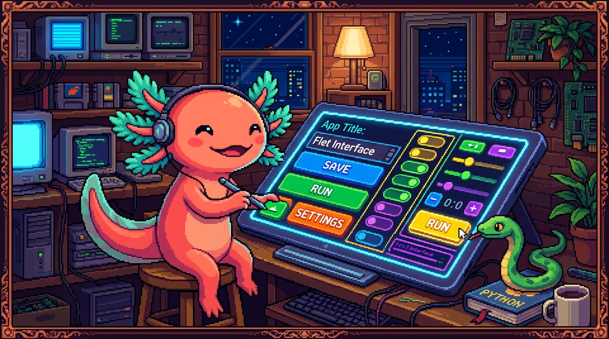

Capítulo 13 — Flet a fondo

En el Capítulo 05 conociste Flet de lejos: viste que PolyPaw es una app hecha solo con Python y que la pantalla son objetos. Hoy bajamos al detalle. Vas a entender qué hace de verdad
main(page), qué es esapageque tanto se nombra, por qué hay que llamar apage.update(), cómo se colocan los controles, cómo responden a un clic y cómo se pasa de una pantalla a otra. Al final, leerás elmain.pyde PolyPaw sin perderte. Bit, nuestro ajolote, ya tiene puesto el casco: vamos a meter las manos en la interfaz.
1. ¿Qué es Flet, en serio?
En el módulo 03 (JavaScript) y en el de HTML/CSS viste que para hacer una página web necesitas tres lenguajes a la vez: HTML para la estructura, CSS para el aspecto y JavaScript para el comportamiento. El repo tunal-digital es justo eso: un sitio en HTML/CSS/JS vanilla.
Flet propone algo distinto: una sola cosa, Python, para todo.
🟦 ¿Qué significa? — Flet
Flet es un framework de Python para construir interfaces gráficas (pantallas con textos, botones, imágenes, listas) que funcionan en escritorio, web y móvil con el mismo código. Tú escribes solo Python; Flet se encarga de dibujar la interfaz y de escuchar lo que hace el usuario. ¿Para qué sirve? Para crear apps con ventanas y botones sin aprender HTML, CSS ni JavaScript. ¿Dónde se usa en un repo real? PolyPaw, la app de aprendizaje de idiomas, está hecha íntegramente con Flet. Toda su pantalla nace en
main.py.🟦 ¿Qué significa? — Framework
Un framework es un esqueleto de programa ya construido: te da la estructura y las reglas, y tú rellenas lo que falta. Si una librería es una caja de herramientas que tú usas cuando quieres, un framework es el taller entero que te dice "tú pon tu código aquí, yo me encargo del resto". Flet es el framework; tu
main.pyes lo que pones dentro.💡 Tip
Una buena forma de pensarlo: en una web vanilla tú mueves el HTML con JavaScript. En Flet describes cómo se ve la pantalla con objetos de Python y Flet la pinta por ti. Cambias el objeto, avisas a Flet, y Flet redibuja.
2. La estructura mínima: main(page) y ft.app
Toda app de Flet arranca igual. Mira el patrón base:
import flet as ft
def main(page):
page.title = "Mi primera app"
page.add(ft.Text("¡Hola desde Flet!"))
ft.app(target=main)
Tres ideas viven aquí: la función main, el parámetro page y la llamada ft.app.
🟦 ¿Qué significa? — La función
main(page)
maines la función que construye tu app. Flet la llama una vez, al arrancar, y le pasa un objeto: la página. El nombremaines por convención (puede ser otro), pero siempre recibe la página como primer parámetro. ¿Para qué sirve? Es el punto de entrada: todo lo que quieras mostrar lo agregas aquí dentro. ¿Dónde se usa en un repo real? Enmain.pyde PolyPaw existe una funciónmain(page)que prepara la ventana y muestra la primera pantalla.🟦 ¿Qué significa? —
ft.app(target=main)
ft.appes la orden que enciende la aplicación. El argumentotarget=mainle dice a Flet "la función que arma mi app esmain, llámala". Es la última línea del archivo y la que pone todo en marcha. ¿Para qué sirve? Sin esta línea, definiste la función pero nadie la ejecuta; la ventana nunca aparecería.🟦 ¿Qué significa? —
import flet as ftEsta línea trae la librería Flet y le pone el apodo corto
ft. A partir de ahí, en vez de escribirflet.Text(...)escribesft.Text(...). Es el mismoimport ... as ...que ya conoces del módulo de Python; el apodoftes la costumbre de toda la comunidad Flet.🔎 En tu código
En PolyPaw, abre
main.pyy busca al final del archivo la línea que invocaft.app(...). Esa es la chispa: lo que la ejecuta cuando haces correr la app. Y arriba del todo verásimport flet as ft, igual que en el ejemplo.
3. La página (page): el lienzo de tu app
page no es una variable cualquiera. Es el objeto más importante de toda app Flet.
🟦 ¿Qué significa? — La página (
page)La
pagees el lienzo donde vive tu interfaz: la ventana completa de la app. Es un objeto de Python con propiedades que puedes ajustar (título, color de fondo, alineación) y métodos para meter o quitar controles. ¿Para qué sirve? Es tu mando a distancia de la ventana: todo lo que el usuario ve está, directa o indirectamente, dentro depage. ¿Dónde se usa en un repo real? En PolyPaw,main(page)configurapage.title, agrega los controles iniciales y se va pasando a otras funciones para que cada pantalla pueda dibujarse.
Algunas propiedades típicas de la página:
def main(page):
page.title = "PolyPaw" # texto de la barra de la ventana
page.bgcolor = "#0f172a" # color de fondo
page.horizontal_alignment = "center" # centra los controles a lo ancho
page.vertical_alignment = "center" # centra a lo alto
page.add(ft.Text("Aprende idiomas con Balam y Andy"))
ft.app(target=main)
🟦 ¿Qué significa? —
page.add(...)
page.add(control)mete un control dentro de la página. Le pasas un objeto (unText, un botón, una columna) y aparece en pantalla. ¿Para qué sirve? Es la forma más directa de mostrar algo. Si comparas con la web: es parecido a hacerappendChilden JavaScript, pero aquí agregas objetos de Python, no nodos de HTML.⚠️ Cuidado
page.add(...)ya redibuja la pantalla por ti. Pero cuando modifiques algo que ya estaba (cambiar un texto, ocultar un botón),addno basta: ahí entrapage.update(), que vemos ahora mismo.
4. page.update(): avisar para que se redibuje
Este es el concepto que más confunde al principio, así que vamos despacio.
🟦 ¿Qué significa? —
page.update()
page.update()le dice a Flet: "cambié algo de la pantalla, vuelve a dibujarla". Tú modificas las propiedades de los controles en Python (por ejemplotexto.value = "Nuevo") y esos cambios no se ven hasta que llamas aupdate(). ¿Para qué sirve? Para refrescar la interfaz tras un cambio. Es el "guardar y mostrar" de Flet. ¿Dónde se usa en un repo real? En PolyPaw, cada vez que respondes una pregunta de una misión y el marcador sube, hay que llamar aupdate()para que el número nuevo aparezca.
Mira la diferencia. Esto no funciona como esperas:
def main(page):
texto = ft.Text("Cuenta: 0")
page.add(texto)
texto.value = "Cuenta: 1" # cambiaste el objeto...
# ...pero nunca avisaste a Flet, así que en pantalla sigue diciendo "Cuenta: 0"
Esto sí:
def main(page):
texto = ft.Text("Cuenta: 0")
page.add(texto)
texto.value = "Cuenta: 1"
page.update() # ahora Flet redibuja y se ve "Cuenta: 1"
💡 Tip
Regla mental de oro: "cambié algo → llamo a
update()". Si tocaste elvalue, el color o la visibilidad de un control que ya estaba en pantalla, termina conpage.update(). Si te olvidas, lo más típico es "mi código está bien pero la pantalla no se mueve". Casi siempre es unupdate()que falta.🟦 ¿Qué significa? — Renderizar (redibujar)
Renderizar es el acto de convertir tus objetos de Python en píxeles reales en la pantalla. Flet renderiza al iniciar y cada vez que llamas a
update(). Tú no dibujas a mano: describes y Flet renderiza.
5. Los controles principales
Recordemos: en Flet cada elemento de la pantalla es un control, un objeto de Python.
🟦 ¿Qué significa? — Control
Un control es un objeto que representa una pieza de la interfaz: un texto, un campo para escribir, un botón, una fila, una columna o una caja. Construyes la pantalla creando estos objetos y combinándolos.
Vamos uno por uno con los más usados.
5.1 Text — mostrar texto
🟦 ¿Qué significa? —
ft.Text
ft.Text("...")crea un control que muestra texto en pantalla. Su propiedad principal esvalue(lo que dice) y acepta extras comosize(tamaño) ocolor. ¿Dónde se usa en un repo real? En PolyPaw, los enunciados de cada misión y la puntuación son controlesText.
titulo = ft.Text("Misión 1: Saludos", size=24, color="white")
titulo.value = "Misión 2: Comida" # luego puedes cambiar lo que dice (+ page.update())
5.2 TextField — recibir texto del usuario
🟦 ¿Qué significa? —
ft.TextField
ft.TextFieldes una caja donde el usuario escribe. Su propiedadlabelpone una etiqueta yvalueguarda lo que el usuario tecleó. ¿Para qué sirve? Para pedir datos: un nombre, una respuesta, una traducción. ¿Dónde se usa en un repo real? En PolyPaw, cuando una misión pide que el usuario escriba la palabra correcta, ese cuadro es unTextField.
respuesta = ft.TextField(label="Escribe la traducción")
# más tarde, en un botón, lees lo que puso:
texto_escrito = respuesta.value
5.3 ElevatedButton — un botón que se pulsa
🟦 ¿Qué significa? —
ft.ElevatedButton
ft.ElevatedButton("texto")crea un botón con relieve. Su propiedad clave eson_click: la función que se ejecuta al pulsarlo (lo vemos en la sección de eventos). ¿Dónde se usa en un repo real? En PolyPaw, los botones "Comprobar", "Siguiente" o el de elegir idioma sonElevatedButton.
boton = ft.ElevatedButton("Comprobar")
5.4 Column y Row — apilar y alinear
🟦 ¿Qué significa? —
ft.Columnyft.Row
ft.Columnapila controles en vertical (uno debajo de otro).ft.Rowlos pone en horizontal (uno al lado de otro). A ambos les pasas una lista de controles. Si vienes del módulo de CSS: es la misma idea que Flexbox, pero escrita en Python.
ft.Column([
ft.Text("¿Cómo se dice 'hola' en maya?"),
ft.TextField(label="Tu respuesta"),
ft.Row([
ft.ElevatedButton("Comprobar"),
ft.ElevatedButton("Saltar"),
]),
])
Aquí los dos botones quedan lado a lado (van en una Row), y esa fila queda debajo del texto y
del campo (porque todo está dentro de una Column).
5.5 Container — la caja que envuelve y decora
🟦 ¿Qué significa? —
ft.ContainerUn
ft.Containeres una caja que envuelve un control (o un grupo) y le da estilo: color de fondo (bgcolor), márgenes internos (padding), bordes redondeados o alineación interna. ¿Para qué sirve? Para dar espacio y aspecto. Es el primo de la etiqueta<div>de HTML con su CSS, pero en Python. ¿Dónde se usa en un repo real? En PolyPaw, las tarjetas de cada misión suelen ser unContainercon fondo y padding alrededor del contenido.
tarjeta = ft.Container(
content=ft.Text("Lección de hoy"),
bgcolor="#1e293b",
padding=20,
border_radius=12,
)
⚠️ Cuidado
Un
Containerenvuelve un solocontent. Si quieres meter varios controles dentro, pon primero unaColumno unaRowcomo sucontent, y dentro de esa la lista de controles.
6. Layout: alineación y espaciado
🟦 ¿Qué significa? — Layout (disposición)
El layout es cómo se acomodan los controles en la pantalla: dónde se centran, cuánto espacio hay entre ellos, qué tan separados de los bordes están. En Flet se controla con propiedades de
Column,Row,Containery de la propiapage.
Las dos propiedades de alineación que más usarás:
🟦 ¿Qué significa? —
alignmentyhorizontal_alignmentEn una
Column,alignmentcontrola la posición vertical (arriba, centro, abajo) yhorizontal_alignmentla posición a lo ancho. En unaRowes al revés. Se usan con valores de Flet comoft.MainAxisAlignment.CENTER.
ft.Column(
[
ft.Text("Bienvenido a PolyPaw"),
ft.ElevatedButton("Empezar"),
],
alignment=ft.MainAxisAlignment.CENTER, # centrado vertical
horizontal_alignment=ft.CrossAxisAlignment.CENTER, # centrado horizontal
spacing=20, # separación entre controles
)
🟦 ¿Qué significa? —
spacingypadding
spacinges el hueco entre los controles de unaColumnoRow.paddinges el margen interno dentro de unContainer(entre el borde de la caja y su contenido). Si recuerdas el "modelo de caja" de CSS, es exactamente la misma intuición.💡 Tip
Para centrar toda tu app en mitad de la ventana, lo más cómodo es ajustar
page.horizontal_alignmentypage.vertical_alignmentdirectamente. Así no tienes que centrar control por control.
7. Eventos: que la app reaccione (on_click)
Una pantalla bonita pero muerta no sirve. Necesitamos que responda.
🟦 ¿Qué significa? — Evento
Un evento es algo que ocurre en la app: un clic, un texto que cambia, una tecla. Tú "escuchas" un evento conectándole una función que se ejecuta cuando sucede. Es la misma idea de los event listeners del módulo de JavaScript, pero en Python.
🟦 ¿Qué significa? —
on_click
on_clickes la propiedad de un botón donde pones qué función llamar al pulsarlo. Flet, al producirse el clic, ejecuta esa función y le pasa un objeto con datos del evento (por convención lo llamamose). ¿Dónde se usa en un repo real? En PolyPaw, el botón "Comprobar" tiene unon_clickque revisa la respuesta y actualiza el marcador.🟦 ¿Qué significa? — Manejador de evento (handler)
El manejador es la función que responde a un evento. Recibe un parámetro (normalmente
e, de event) con la información de lo que pasó.
Ejemplo completo y mínimo: un contador.
import flet as ft
def main(page):
page.title = "Contador"
cuenta = 0
marcador = ft.Text(f"Clics: {cuenta}", size=20)
def sumar(e): # este es el manejador
nonlocal cuenta # quiero modificar la variable de fuera
cuenta += 1
marcador.value = f"Clics: {cuenta}"
page.update() # avisar para redibujar
boton = ft.ElevatedButton("Sumar", on_click=sumar)
page.add(marcador, boton)
ft.app(target=main)
⚠️ Cuidado
En
on_click=sumarse escribe el nombre de la función sin paréntesis. Si pusierason_click=sumar(), Python la ejecutaría inmediatamente y le pasaría aon_clickel resultado (probablementeNone), no la función. Le entregas la función para que Flet la llame luego, no el resultado de llamarla ahora.🟦 ¿Qué significa? —
nonlocal
nonlocalle dice a una función interna: "la variablecuentano es nueva, es la de la función de afuera; déjame modificarla". Sinnonlocal, Python crearía unacuentalocal y la de fuera no cambiaría. Lo necesitas cuando un manejador modifica una variable definida enmain.
8. Manejar el estado de la interfaz
🟦 ¿Qué significa? — Estado (state)
El estado son los datos que tu app recuerda y que cambian con el tiempo: la puntuación actual, qué misión estás resolviendo, qué idioma elegiste. Cuando el estado cambia, la pantalla debe reflejarlo. ¿Dónde se usa en un repo real? En PolyPaw, el estado incluye el progreso del usuario y la misión activa; al avanzar, esos datos cambian y la pantalla se actualiza.
El ciclo en Flet es siempre el mismo, y conviene memorizarlo:
- Guardas el estado en variables de Python (
cuenta = 0,mision_actual = 1). - Un evento (clic) cambia ese estado.
- Actualizas los controles que dependen de ese estado (
marcador.value = ...). - Llamas a
page.update()para que se vea.
💡 Tip
Si vienes de React (lo verás en el módulo 06, y RachaSimple y Faro lo usan), notarás algo: en React la pantalla se redibuja sola cuando cambia el estado. En Flet, en cambio, tú avisas con
page.update(). Más manual, pero más fácil de seguir paso a paso.🔎 En tu código
PolyPaw guarda los datos de las misiones en archivos JSON (carpeta
missions/). Un módulo aparte,database_manager.py, se encarga de leer y escribir esos datos. Esa es una idea clave: el estado del contenido (las misiones, el progreso) vive en JSON y en Python, no "dentro" de los controles. Los controles solo muestran lo que el estado dice en cada momento.🟦 ¿Qué significa? —
database_manager.pyEn PolyPaw,
database_manager.pyes el módulo que gestiona los datos: abre los archivos JSON demissions/, devuelve la información de cada misión y guarda el progreso. Separar esto de la interfaz mantiene el código ordenado:main.pydibuja,database_manager.pyrecuerda.
9. Navegación entre pantallas
Una app real tiene varias pantallas: inicio, elegir idioma, misión, resultados. ¿Cómo se pasa de una a otra en Flet?
🟦 ¿Qué significa? — Navegación
La navegación es el paso de una pantalla a otra dentro de la app. En Flet, la técnica más sencilla para principiantes es: borrar lo que hay en la página y dibujar la pantalla nueva.
🟦 ¿Qué significa? —
page.controlsypage.clean()
page.controlses la lista de todos los controles que hay ahora mismo en la página.page.clean()la vacía (quita todo lo que se ve). Combinadas conpage.add(...), te permiten reemplazar una pantalla entera por otra.
Patrón clásico: una función por pantalla.
import flet as ft
def main(page):
page.title = "PolyPaw"
def mostrar_inicio():
page.clean() # borra lo anterior
page.add(
ft.Text("PolyPaw", size=30),
ft.ElevatedButton("Empezar misión", on_click=ir_a_mision),
)
page.update()
def mostrar_mision():
page.clean()
page.add(
ft.Text("Misión 1: Saludos", size=24),
ft.TextField(label="Traduce 'hola'"),
ft.ElevatedButton("Volver al inicio", on_click=ir_a_inicio),
)
page.update()
def ir_a_mision(e):
mostrar_mision()
def ir_a_inicio(e):
mostrar_inicio()
mostrar_inicio() # arrancamos en la pantalla de inicio
ft.app(target=main)
Cada pantalla es una función que limpia la página y dibuja lo suyo. Los botones de una pantalla llaman a la función de otra. Así de simple es saltar entre vistas.
💡 Tip
Fíjate en el truco:
ir_a_mision(e)recibe eledel clic (Flet siempre lo pasa) y por dentro llama amostrar_mision(), que no necesitae. Separar el manejador (que recibee) de la función que dibuja (que no lo necesita) mantiene todo limpio y reutilizable.⚠️ Cuidado
Si después de
page.clean()ypage.add(...)se te olvidapage.update(), la pantalla se queda en blanco o congelada. Otra vez la regla de oro: cambiaste algo, llama aupdate().🔎 En tu código
Para Flet más avanzado existe un sistema de rutas con
page.go(...)y vistas. PolyPaw, siendo una app de aprendizaje, se entiende muy bien con el patrón "una función por pantalla" que acabas de ver. Cuando leasmain.py, busca funciones cuyo nombre empiece pormostrar_,pantalla_o similar: cada una arma una vista.
10. Cómo se arma la interfaz real de PolyPaw
Juntemos todo en un mapa mental de cómo encaja PolyPaw, la app de idiomas hecha 100% en Python con Flet:
main.pyes el corazón. Tiene la funciónmain(page)y la líneaft.app(target=main)al final. Configura lapage(título, colores) y muestra la primera pantalla.- Las pantallas se arman combinando los controles que ya conoces:
Textpara enunciados,TextFieldpara respuestas,ElevatedButtonpara acciones, todo organizado conColumn,RowyContainer. - Los eventos (
on_click) conectan los botones con funciones que comprueban respuestas, suben la puntuación y navegan a la siguiente misión. - El estado (progreso, misión actual) vive en variables de Python y, de forma persistente,
en los archivos JSON de
missions/, gestionados pordatabase_manager.py. - Cada cambio visible termina con
page.update().
🔎 En tu código
Recorrido sugerido para leer PolyPaw con lo aprendido hoy: (1) abre
main.pyy localizamain(page)yft.app(...); (2) identifica dónde se crean los controles de la primera pantalla; (3) sigue unon_clickhasta su función manejadora; (4) mira cómo esa función pide datos adatabase_manager.py(que lee demissions/*.json) y cómo cierra conpage.update(). Con ese recorrido entiendes la app completa.💡 Tip
Compara con los otros repos del manual para ver por qué Flet es especial: tunal-digital es HTML/CSS/JS; RachaSimple es React + TypeScript; Faro/Organizer es Next.js + React + TypeScript. Todos esos usan tecnologías web. PolyPaw es el único que hace una app completa con interfaz usando solo Python, gracias a Flet. Ese es su superpoder.
✅ Checklist — ¿ya domino esto?
- [ ] Sé explicar qué es Flet y por qué deja hacer interfaces sin HTML/CSS/JS.
- [ ] Entiendo qué hace la función
main(page)y para qué sirveft.app(target=main). - [ ] Sé qué es la
pagey nombro tres propiedades suyas. - [ ] Tengo clarísima la regla de oro: cambié algo → llamo a
page.update(). - [ ] Reconozco y sé usar
Text,TextField,ElevatedButton,Column,RowyContainer. - [ ] Puedo centrar y espaciar controles con
alignment,spacingypadding. - [ ] Sé conectar un botón a una función con
on_click(sin paréntesis) y entiendononlocal. - [ ] Comprendo qué es el estado y el ciclo cambiar estado → actualizar control →
update(). - [ ] Sé navegar entre pantallas con
page.clean()+page.add(...)+page.update(). - [ ] Puedo ubicar en
main.pyde PolyPaw elmain(page), un control y unon_click.
🧪 Ejercicios
-
(En papel) Explica con tus palabras la diferencia entre
page.add(...)ypage.update(). ¿Cuándo basta solo conaddy cuándo necesitasupdate? -
💻 Escribe la app mínima de Flet: importa Flet, crea
main(page), ponle un título a la página, agrega unTextque diga "Hola, soy Bit" y enciéndela conft.app(target=main). -
💻 Construye un contador como el de la sección 7, pero con dos botones: uno que sume y otro que reste. Acuérdate de
nonlocaly depage.update()en cada manejador. -
💻 Arma una pantalla de "registro": un
TextFieldcon etiqueta "Tu nombre" y unElevatedButton"Saludar". Al pulsarlo, unTextdebe cambiar para decir "¡Hola,!" usando el valuedelTextField. -
💻 Crea dos pantallas con el patrón "una función por pantalla":
mostrar_inicio()con un botón "Ir a misión" ymostrar_mision()con un botón "Volver". Comprueba que puedes ir y volver sin que la pantalla se quede en blanco. -
💻 Abre el
main.pyde PolyPaw (o léelo en el repo) y localiza: dónde se llama aft.app(...), un controlText, unon_clicky, si lo encuentras, una llamada adatabase_manager.py. Anota en una lista qué hace cada uno. (No hace falta que lo modifiques; el objetivo es leer y entender.)
Bit te choca la patita: hoy pasaste de "ver" Flet a entender cómo respira una app real. Con
main(page), los controles, los eventos ypage.update()ya tienes las cuatro patas de la mesa. Lo demás es práctica.